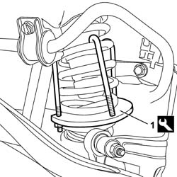
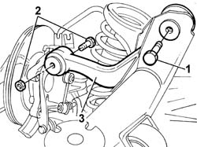

4420C82 Rear suspension CAMBER ROD - R.R. WITH SUSPENSION CROSSMEMBER REMOVED
- Path
- Procedures > 44 SUSPENSION AND WHEELS > 4420 REAR SUSPENSION > 4420C ANTI-ROLL BAR/SUSPENSION RODS REAR > 4420C82 Rear suspension CAMBER ROD - R.R. WITH SUSPENSION CROSSMEMBER REMOVED
- Kind
- repair procedure (removal / refitting; the operation number is the code)
- Applies to
- all engines; all production periods
- Interactive page
- https://sloeber94.github.io/elrnDB-lThss/en/#/177981
Applies to: all engines; all production periods
 Removing
Removing
 Refitting
Refitting1. Position the tool for compressing the spring and compress the spring slightly.
 | Description | Code | Function |
|---|---|---|---|
1 | Extractor - fitting tool | 1.870.829.000 | Compress and decompress the rear suspension coil springs on the vehicle |

Applies to: all engines; all production periods
1. Undo the bolt fixing the camber rod to the rear axle.
2. Undo the bolt fixing the arm to the stub axle.
3. Remove the camber rod.

Applies to: all engines; all production periods
Refitting
Removing- Fit the camber rod.
- Tighten the bolt fixing the rod to the stub axle.
- Tighten the bolt fixing the camber rod to the rear axle.
- Remove the tool for compressing the spring fitted previously.
| Description | Code | Function |
|---|---|---|---|
. | Extractor - fitting tool | 1.870.829.000 | Compress and decompress the rear suspension coil springs on the vehicle |